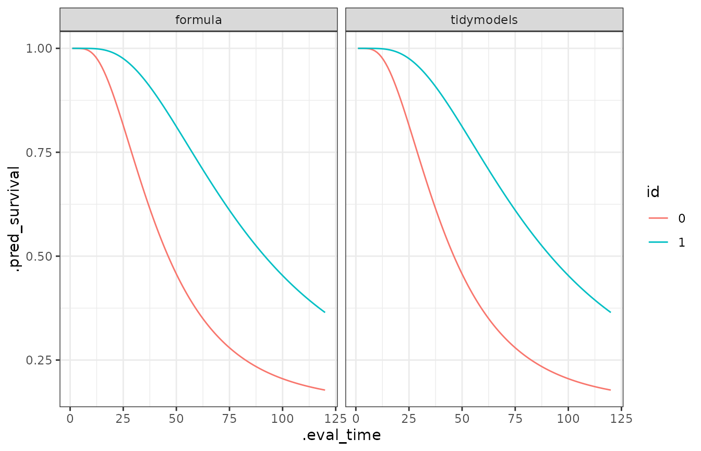

Get started
lnmixsurv.RmdThe model can be used with the usual formula interface or using the
tidymodels and censored structure.
Formula interface:
library(lnmixsurv)
library(readr)
mod1 <- survival_ln_mixture(Surv(y, delta) ~ x,
sim_data$data,
starting_seed = 20)
mod1
#> survival_ln_mixture
#> formula: Surv(y, delta) ~ x
#> observations: 10000
#> predictors: 2
#> mixture groups: 2
#> ------------------
#> estimate std.error cred.low cred.high
#> (Intercept)_1 3.7005261 0.008960928 3.6874161 3.7127982
#> x1_1 0.6860558 0.014259390 0.6664254 0.7050614
#> (Intercept)_2 9.4916865 0.162788376 9.2698034 10.0927974
#> x1_2 0.1611774 0.613334336 -0.4628000 1.3511508
#>
#> Auxiliary parameter(s):
#> estimate std.error cred.low cred.high
#> phi_1 2.6484958 0.048153081 2.5935736 2.712449
#> phi_2 3.9597761 2.912488989 1.7242030 9.644528
#> eta_1 0.8551168 0.003429121 0.8505096 0.859702Tidymodels approach:
library(censored)
library(ggplot2)
library(dplyr)
library(tidyr)
library(purrr)
mod_spec <- survival_reg() |>
set_engine("survival_ln_mixture", starting_seed = 20) |>
set_mode("censored regression")
mod2 <- mod_spec |>
fit(Surv(y, delta) ~ x, sim_data$data) The estimates are easily obtained using tidy method. See
?tidy.survival_ln_mixture for extra options.
tidy(mod1)
#> # A tibble: 4 × 3
#> term estimate std.error
#> <chr> <dbl> <dbl>
#> 1 (Intercept)_1 3.70 0.00896
#> 2 x1_1 0.686 0.0143
#> 3 (Intercept)_2 9.49 0.163
#> 4 x1_2 0.161 0.613
tidy(mod2)
#> # A tibble: 4 × 3
#> term estimate std.error
#> <chr> <dbl> <dbl>
#> 1 (Intercept)_1 3.70 0.00896
#> 2 x1_1 0.686 0.0143
#> 3 (Intercept)_2 9.49 0.163
#> 4 x1_2 0.161 0.613The predictions can be easily obtained from a fit.
library(ggplot2)
library(dplyr)
library(tidyr)
library(purrr)
models <- list(formula = mod1, tidymodels = mod2)
new_data <- sim_data$data |> distinct(x)
pred_sob <- map(models, ~ predict(.x, new_data,
type = "survival",
eval_time = seq(120)
))
bind_rows(pred_sob, .id = "modelo") |>
group_by(modelo) |>
mutate(id = new_data$x) |>
ungroup() |>
unnest(cols = .pred) |>
ggplot(aes(x = .eval_time, y = .pred_survival, col = id)) +
geom_line() +
theme_bw() +
facet_wrap(~modelo)